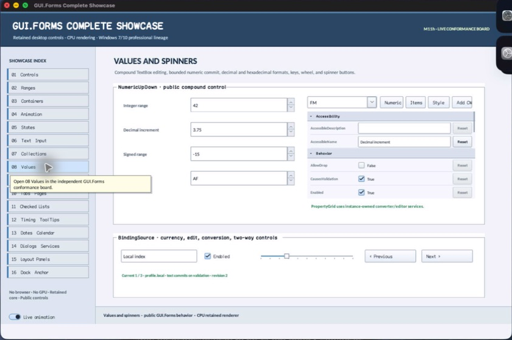

class · visual
NumericUpDown
NumericUpDown is a retained composite numeric editor over an owned TextBox and source-private SpinButtons. It enforces ordered ranges, bounded step/precision/button geometry, decimal or hexadecimal formatting, commit synchronization, semantic range actions, and one authoritative value event.
Visual evidence

Ownership and hierarchy
- Hierarchy
- Panel → NumericUpDown
- Declaration
- include/gui_forms/controls/panel/numeric_up_down/numeric_up_down.hpp:12
- Definition
- src/controls/panel/numeric_up_down/numeric_up_down.cpp
Declared methods
NumericUpDown public
explicit NumericUpDown(StableId stable_id)Constructs owned editor and spin controls while deferring child attachment until shared ownership exists.
initialize_control_tree public
void initialize_control_tree()Attaches owned children and subscriptions exactly once, then synchronizes presentation.
minimum public
[[nodiscard]] double minimum() const noexceptReturns the inclusive lower value bound.
maximum public
[[nodiscard]] double maximum() const noexceptReturns the inclusive upper value bound.
set_range public
void set_range(double minimum, double maximum)Validates finite ordered bounds, constrains the current value, and refreshes editor and semantics atomically.
value public
[[nodiscard]] double value() const noexceptReturns the authoritative constrained numeric value.
set_value public
void set_value(double value)Validates finiteness, clamps to the range, synchronizes text, and publishes a real value change.
increment public
[[nodiscard]] double increment() const noexceptReturns the positive step magnitude.
set_increment public
void set_increment(double increment)Accepts a finite positive increment and refreshes semantic range metadata.
decimal_places public
[[nodiscard]] std::uint8_t decimal_places() const noexceptReturns the bounded fixed-point precision used outside hexadecimal mode.
set_decimal_places public
void set_decimal_places(std::uint8_t places)Accepts supported precision and reformats the owned editor.
hexadecimal public
[[nodiscard]] bool hexadecimal() const noexceptReports whether integral hexadecimal presentation and parsing are active.
set_hexadecimal public
void set_hexadecimal(bool hexadecimal)Toggles hexadecimal policy and synchronizes editor projection.
button_width public
[[nodiscard]] double button_width() const noexceptReturns the logical allocation reserved for the spin-button column.
set_button_width public
void set_button_width(double width)Accepts a finite 12–64 logical-pixel width and invalidates composite layout.
editor public
[[nodiscard]] std::shared_ptr<TextBox> editor() const noexceptReturns the owned TextBox for composition-aware inspection and focus routing.
value_changed public
[[nodiscard]] Event<double>& value_changed() noexceptReturns the event published after authoritative value commits.
arrange public
void arrange(Rect final_bounds) overrideAllocates the editor and trailing button column from current button-width policy.
on_key_preview public
void on_key_preview(KeyEvent& event) overrideHandles Up/Down stepping before the focused TextBox consumes the key.
on_pointer_preview public
void on_pointer_preview(PointerEvent& event) overrideInitializes the owned control tree before routed pointer interaction.
semantic_descriptor public
[[nodiscard]] SemanticDescriptor semantic_descriptor() const overrideProjects a spin-button role with numeric range, current value, step actions, and formatted text.
on_semantic_action public
bool on_semantic_action(SemanticAction action, std::string_view value) overrideRoutes increment, decrement, and set-value through common validation and commit logic.
step private
void step(int direction)Executes NumericUpDown's step operation against retained state; the signature records its exact inputs, result, constness, and failure surface.
commit_editor_text private
void commit_editor_text()Executes NumericUpDown's commit editor text operation against retained state; the signature records its exact inputs, result, constness, and failure surface.
synchronize_editor private
void synchronize_editor()Executes NumericUpDown's synchronize editor operation against retained state; the signature records its exact inputs, result, constness, and failure surface.
formatted_value private
[[nodiscard]] std::string formatted_value() constReports the current formatted value value without mutation.